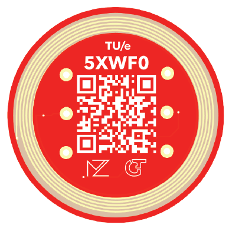

5XWF0 CBL Wireless Energy Transfer Token
Property of the course and its main lecturer.
If found, or if not deemed worthy, return to
the course lecturer or the Flux building reception desk.
“Transfer of energy demands responsibility.”